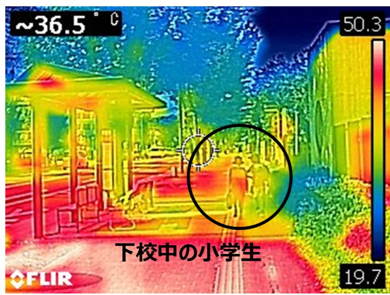
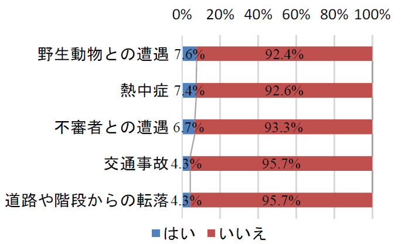
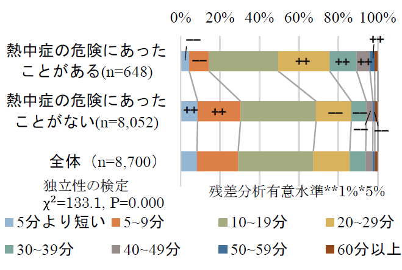
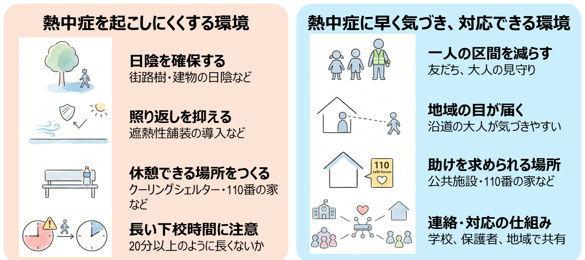

「起こしにくく、早く気づける」通学環境へ
通学路の熱中症リスクをどう減らすか
近年、夏の暑さはますます厳しくなっています。子どもは大人に比べて外気温の影響を受けやすく、発汗機能や暑さへの慣れも十分に発達していないため、熱中症リスクが高いとされています。特に小学生の下校時は、日中の気温が高い時間帯と重なりやすく、強い日差しや舗装面からの照り返しを受けながら歩くことになります。
これまで通学路の安全は、主に交通事故や防犯の観点から考えられてきました。しかし、気候変動により夏季の暑さが厳しくなる中で、通学路を「暑さ」の視点から点検し、子どもが安全に登下校できる環境を整えることが重要になっています。
なぜ通学路の暑さを考えるのか
通学路は、子どもが毎日のように利用する身近な公共空間です。特に下校時は、気温や日射が高い時間帯と重なることが多く、朝の登校時よりも暑熱環境への曝露が大きくなります。また、下校時は学年や授業時間によって帰る時間が分かれやすく、帰路の途中で友だちと別れ、一人になる場面も生じやすいという特徴があります（図1） 。

そのため、通学路の熱中症対策では、単に「暑い日に気をつける」だけでは十分ではありません。子どもが長い時間暑さにさらされにくい環境をつくることに加え、万が一体調不良が生じたときに、本人が助けを求めやすく、周囲の大人が早く気づける環境を整えることが求められます。
下校環境の特徴
- 下校時は日中の気温の高い時間帯と重なることが多く、登校時よりも暑熱環境への曝露が大きくなります
- 下校のタイミングは学年によって差があり、その上、帰路では児童がそれぞれの自宅へと分かれていくため、一人になる場面が登校時と比べて生じやすいことも特徴です
- 下校時は登校時と比べて見守り活動が少なく、万が一の際に大人による発見が遅れる可能性が高まります
保護者調査からリスクを捉える
本研究では、全国の小学生の保護者を対象としたアンケート調査をもとに、登下校中の熱中症リスクと通学環境との関係を分析しました。全国8,700名の保護者の回答を用いて、子どもが登下校中に熱中症の危険にあった経験の有無と下校時間や交通手段、歩道環境などとの関連を検討しています。
さらなる研究では、2025年5月から9月の下校時に熱中症と思われる体調不良を経験したかを尋ね、徒歩で下校する児童を対象に、経験なし、単一症状、複数症状の3区分で分析しています。
長い下校時間と暑い道路環境がリスクを高める
登下校中に「熱中症」の危険にあった、またはあいそうになった児童は7.4％でした（図2） 。これは、「交通事故」や「道路や階段からの転落」よりも高い割合であり、熱中症が通学路の安全を考えるうえで重要なリスクであることを示しています。2025年度の追加調査では、その割合は9.4％に増加しており、もはや登下校中における熱中症は、約10人に1人に近い割合で経験が報告される状況となっています。 なお、図2において最も割合の高い項目は 「野生動物との遭遇」であり、これは熊の出没が全国的に増えている状況などを表したものと考えられます。

特に重要なのは、下校時間との関係です。分析の結果、下校時間が20分を超える児童では、熱中症の危険を経験した割合が高い傾向がみられました。一方で、下校時間が10分未満の児童ではリスクが低い傾向があり、暑い時間帯にどれだけ長く歩くかが、熱中症リスクと関係していることが示されました（図3） 。

20分以上の児童で特に経験した児童が多くなっています
また、通学路の環境も重要です。通学路の舗装面が太陽の照り返しで熱くなりやすいことや、日差しが強く感じられる区間が多いことが、熱中症経験、特に複数症状の経験と関連している可能性が示されました。
一方で、熱中症対策は、暑さを避けることだけではありません。通学路で児童が一人になる区間が長い場合や、通行人が少ない地域では、体調の異変を本人が周囲に伝えにくく、周囲の大人もすぐに気づきにくい可能性があります。つまり、熱中症を「起こしにくくする環境」と、体調不良が生じたときに「早く気づき、対応できる環境」の両方が必要です。
実践への示唆：通学路を「通る道」から「過ごせる道」へ
これからの通学路点検では、交通安全や防犯だけでなく、「暑さ」の視点を加えることが重要です。たとえば、下校に20分以上かかる児童がいないか、日陰を歩ける区間がどの程度あるか、舗装面の照り返しが強い場所はないか、いざというときに涼める施設や店舗があるか、一人になる区間が長くないか、といった点を確認する必要があります。
熱中症を起こしにくくするには、日陰の確保、照り返しを抑える舗装、休憩できる場所の配置、下校時間や通学区域の見直しなどが考えられます。一方で、早く気づき、対応できる環境をつくるには、地域の見守り、通行人の目、110番の家や公共施設・店舗との連携、子どもが体調不良を伝えやすい仕組みも重要です。
気候変動により夏の暑さがさらに厳しくなることを前提に、通学路を「暑さにも対応できる道」へと見直していくことが求められます。

※イラストはGeminiにより作成